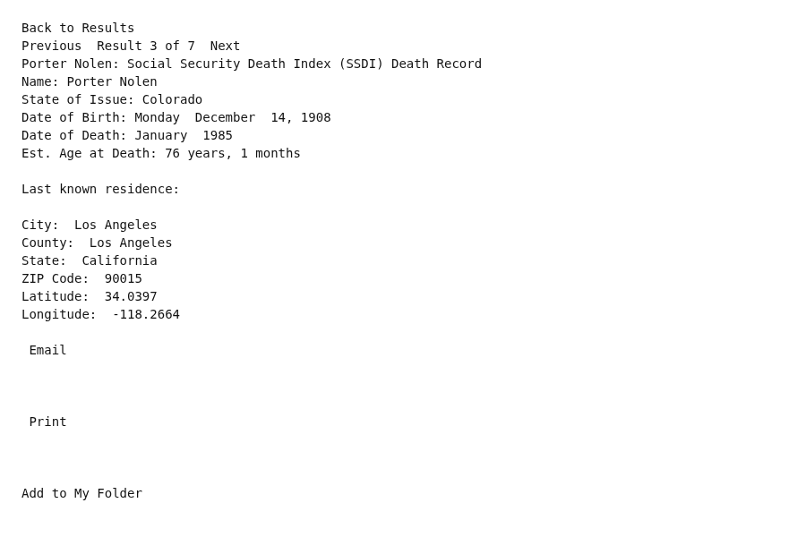

Porter Wendell Nolen 1908–1985
Great-grandfather of Shayla Nadah Alamdari, wife of Peter.
Porter Wendell Nolen was born in 1908 (according to the family's 2015 tree)1, the son of Melvin Porter Nolen and Addie Lee Foley5,6,7,8. He died in Jan 1985 in Los Angeles, California, United States4.
Family
- Parents
- Melvin Porter Nolen b. 1870 and Addie Lee Foley b. 1878 documented
- Partner
- Berniece Wilmina Holt b. 1910
- Children
- Carol May Nolen b. 1934 documented
Life events
| Event | Date | Place and details |
|---|---|---|
| Born | 1908 | According to the family's 2015 tree1 |
| Lived | 1934 | Grand Junction, Colorado, United States3 |
| Died | Jan 1985 | Los Angeles, California, United States4 |
| Origin | Monroe City, Missouri, United States According to the family's 2015 tree2 |
Records

Sources
- Peter's tree, danenberg.sql, 2007–2015, personae 185, birth.
- Peter's tree, danenberg.sql, 2007–2015, personae 185, provenance.
- Entries for Carol May Nolen (born 1934, provenance Grand Junction, CO) and Porter Wendell Nolen (born 1908, provenance Monroe City, MO).
INSERT INTO "personae" (first, last, male, birth, birth_precision, provenance) VALUES("Carol May", "Nolen", 0, "1934", "%Y", 'Grand Junction, CO'); INSERT INTO "personae" (first, last, male, birth, birth_precision, provenance) VALUES("Porter Wendell", "Nolen", 1, "1908", "%Y", 'Monroe City, MO');
Married Berniece Wilmina Holt and had their daughter Carol May Nolen in 1934, whose provenance in the 2015 database is Grand Junction, Mesa County, Colorado.
- Porter Nolen: Social Security Death Index (SSDI) Death Record.
Name: Porter Nolen State of Issue: Colorado Date of Birth: Monday December 14, 1908 Date of Death: January 1985 Est. Age at Death: 76 years, 1 months Last known residence: City: Los Angeles County: Los Angeles State: California ZIP Code: 90015
Social Security Death Index record: Porter Nolen, born Monday, 14 December 1908, died January 1985 (age 76 years, 1 month); SSN issued in Colorado; last known residence Los Angeles, Los Angeles County, California 90015.
- Peter's tree, danenberg.sql, 2007–2015, parentages 116.
- 1910 US Census: Household of Melvin P Nolen, Monroe City, Missouri.
Name: Porter W Nolen | Age in 1910: 1 | Birth Date: 1909 [1909] | Birthplace: Missouri | Home in 1910: Monroe Ward 1, Monroe, Missouri, USA | Sheet Number: 3a | Street: Chestnut Street | Race: White | Gender: Male | Relation to Head of House: Son | Marital Status: Single | Father's Birthplace: Missouri | Mother's Birthplace: Kentucky | Enumeration District Number: 0126 | Enumerated Year: 1910 | Neighbors: View others on page || Household: Melvin P Nolen 38 Head; Addie L Nolen 32 Wife; John L Nolen 13 Son; Harold L Nolen 5 Son; Porter W Nolen 1 Son; Ona Fields 25 Sister-in-law
father: Melvin Porter Nolen; mother: Addie Lee Foley
- 1920 US Census: Household of Melvin P Nolen, Monroe City, Missouri.
Name: Porter W Nolen | Age: 11 | Birth Year: abt 1909 [abt 1909] | Birthplace: Missouri | Home in 1920: Monroe, Monroe, Missouri | Street: Chestnut Court | Residence Date: 1920 | Race: White | Gender: Male | Relation to Head of House: Son | Marital Status: Single | Father's Name: Melvin P Nolen | Father's Birthplace: Missouri | Mother's Name: Addie L Nolen | Mother's Birthplace: Kentucky | Able to Speak English: Yes | Occupation: None | Attended School: yes | Able to read: Yes | Able to Write: Yes | Neighbors: View others on page || Household: Melvin P Nolen 49 Head; Addie L Nolen 42 Wife; Harold L Nolen 15 Son; Porter W Nolen 11 Son
father: Melvin Porter Nolen; mother: Addie Lee Foley
- Household of Melvin P Nolen, Mesa County, Colorado, USA, 1950 US Census.
Name: Porter W Nolen | Age: 41 | Birth Date: abt 1909 [abt 1909] | Gender: Male | Race: White | Birth Place: Missouri | Marital Status: Divorced | Relation to Head of House: Son | Residence Date: 1950 | Home in 1950: Mesa, Colorado, USA | Street Name: College Farm Road | House Number: 361 | Apartment Number: meseaan | Dwelling Number: 163 | Farm: No | Acres: No | Occupation Category: Other | Worked Last Week: No | Seeking Work: No | Employment Status: No || Household: Melvin P Nolen 79 Head; Addie Lee Nolen 73 Wife; Porter W Nolen 41 Son
father: Melvin Porter Nolen; mother: Addie Lee Foley